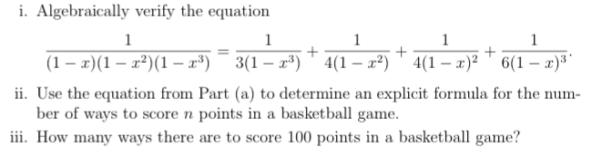
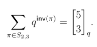
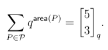
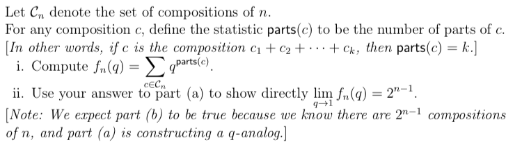

I've posted the notes and topics for each day and what is expected of you in and out of class. This schedule is approximate and subject to change! Check back here often.
Wednesday, August 28
- Notes from Section 1.1 (Notes pages 0–19) '
- Syllabus discussion.
- Simple Counting
- Multiplication Principle
- Examples
No class September 2.
Wednesday, September 4
Before Class:
- Email me at chanusa@qc.cuny.edu with the following three or four things: (1) Your name, (2) Your class (Math 636) (3) the email address where you are best contacted (4) Which math classes you've taken in the past year and are taking this semester. If you are an undergraduate also send me (5) your graduation year.
- Thoroughly read all pages of the course webpage. This should answer all the questions that you may have about the class.
- Now take the Syllabus Quiz. Feel free to refer back to the course webpage for help. Retake the quiz as many times as necessary to earn a score of 100%.
- Fill out this Doodle to let me know when you are available for office hours this semester. (Pretend like it is a normal week with no holidays --- select the times when you would be able to come to office hours regularly.) I will try to choose times that work for most people.
- (Download / Print out) the notes for class (below)
- Background reading: Combinatorics: A Guided Tour, Section 1.1
- Prepare to answer the following thought questions in class.
- Question 1. Answer Question 1.1.2ab (This means parts (a) and (b) in Problem 2 of Section 1.1). Then: (c) Assuming the coin is fair, what is the probability that a sequence of 20 flips has exactly 10 heads and 10 tails (in any order)?
- Question 2. How many orderings are there for a deck of 52 cards if all the cards of the same suit are together?
In class:
- Homework Discussion
- Multisets
- Notes from Sections 1.2 & 2.2 (Notes pages 20–28) '
- Counting pitfalls
- Overcounting, Counting the complement
Thursday, September 5
Before Class:
- Background reading: Combinatorics: A Guided Tour, Sections 1.1 and 1.2
- Prepare to answer the following thought questions in class.
- Question 3. (a) How many subsets of [30] contain no prime numbers? (b) How many subsets of [30] have size 15 and no numbers larger than 20? (c) How many multisubsets of [30] of size 13 have smallest element 6 and largest element 17?
- Question 4. Answer Question 1.2.2.
- Question 5. Answer Question 1.2.13.
In class:
- Homework Discussion
- Pascal's triangle and the binomial theorem
- Notes from Section 1.3 (Notes pages 29–35) '
- Bijections
Monday, September 9
Before Class:
- In the five days between September 4 and September 9, meet for one hour outside of class with at least one other classmate. Your goal is to get together to talk about combinatorics, working together to answer the thought questions.
- Background reading: Combinatorics: A Guided Tour, Sections 1.1 and 1.2
- Prepare to answer the following thought questions in class.
- Question 6. (a) Answer Question 1.1.5. Then: (b) Among all ways to choose fifteen coins, what is the smallest amount of money that occurs in at least two different ways? (For example, 15 dimes equals $1.50.)
- Question 7. In chess, a rook is a piece that can move only vertically and horizontally. Therefore, two rooks attack each other if they are placed in the same row or in the same column. A non-attacking configuration of rooks consists of placing some number of rooks on a chessboard so that no pair of rooks attack each other. Determine the number of non-attacking configurations of five indistinguishable rooks on an 8x8 chessboard.
- Question 8. Exercise 2.2.8
In class:
- Continuation of previous set of notes.
- Bijections
Wednesday, September 11
Before Class:
- Prepare for Assessment 1 on Standards 1–2.
- Background reading: Combinatorics: A Guided Tour, Section 1.3
- Prepare to share your thoughts about the exploration discussed here.
- Exploration Question: Let an be the maximal number of pieces into which you can cut a circle using n lines. Determine by hand the first few values of an. Use the Online Encyclopedia of Integer Sequences to determine what the formula is for an as a function of n.
Once you have found the sequence, there are links right after the first few terms of the sequence. You should look at the graph of the sequence and listen to the sequence. Write down the 42nd term of the sequence.
Then, via the WebCam link at the bottom of the page, look through a few sequences and write down a sequence that looks interesting (its sequence number, its description, and a few first terms) and write a paragraph or two about why you thought it was interesting. We'll share that with our classmates in class.
- Exploration Question: Let an be the maximal number of pieces into which you can cut a circle using n lines. Determine by hand the first few values of an. Use the Online Encyclopedia of Integer Sequences to determine what the formula is for an as a function of n.
In class:
- Assessment 1 on Standards 1–2.
- Bijection Worksheet
Monday, September 16
Before Class:
- Complete the Bijection Worksheet we started in class.
- Prepare to answer the following thought questions in class.
- Question 8. Answer each of the following SIX jeopardy questions by giving a "real world" situation that could be counted by the given quantity. Exercises 1.2.1abcd, 2.1.1c, 2.2.1a
- Question 9. Suppose k≤n.
- How many functions are there from [k] to [n]?
- How many bijections are there from [k] to [n]?
- How many one-to-one functions are there from [k] to [n]?
- How many onto functions from [k] to [n] are not one-to-one?
- Question 10. Create and prove a bijection between two-member subsets of {1, 2,..., n, n+1} and all possibilities of placing one pair of parentheses in a string of n letters. For example, when n=3, we see that there are six two-member subsets of {1,2,3,4}:
{1,2}, {1,3}, {1,4}, {2,3}, {2,4}, and {3,4}.
and there are six ways to place one pair of parentheses in the word abc:(a)bc, a(b)c, ab(c), (ab)c, a(bc), and (abc).
Notice that "a()bc" is not valid—there are no letters between the parentheses.
- Background reading: Combinatorics: A Guided Tour, Section 1.4
- Let me know if you are interested in taking a reassessment this week.
In class:
- Homework Discussion
- Notes from Section 1.4 (Notes pages 36–42) '
- Equivalence classes
- Counting using symmetry
Wednesday, September 18
Before Class:
- Prepare for Assessment 2 on Standards 3–4.
- Background reading: Combinatorics: A Guided Tour, Sections 1.4, 2.1, and 2.2
In class:
- Assessment 2 on Standards 3–4.
- Counting using symmetry
- Notes from Sections 2.1, 2.2, and 4.2 (Notes pages 43–51) '
- Combinatorial proofs
Monday, September 23
Before Class:
- Prepare to answer the following questions in class.
- Question 11.
(a) Exercise 1.4.15
(b) Write a paragraph explaining why we can not use the equivalence principle to count the number of different necklaces where two of the n beads are indistinguishable (the same color, for example). - Question 12. Exercise 1.4.13.
- Question 11.
(a) Exercise 1.4.15
- Background reading: Combinatorics: A Guided Tour, Sections 2.1, 2.2, and 4.2
In class:
- Combinatorial proofs
Wednesday, September 25
Before Class:
- Prepare to answer the following questions in class.
- Question 13. Understand and explain to the class the proof of Theorem 2.1.2. The proof relies on the argument given in Combinatorial Proof #2 on page 55 and the solution to Question 62.
In class:
- Tiling interpretation of Fibonacci numbers
- Worksheet on Combinatorial proofs
No class on Monday, September 30 or Wednesday, October 2. (Professor Hanusa will be out of town at a research workshop.)
Sometime between Wednesday September 25 and Friday October 4, complete the following: (I highly recommend working with a classmate outside of class.)
- Question 14. Give a combinatorial proof of the identity in Exercise 2.2.4f.
- Question 15. Use the square-domino interpretation of the Fibonacci numbers to give a combinatorial proof that f2n=1+Σ1≤i≤n f2i-1.
- Watch the video lecture posted here.
- The video is based on these notes from Sections 2.1 through 2.4 (Notes pages 52–61) ' and cover Counting distributions, The sixteenfold way, Stirling numbers, Bell numbers, and Integer partitions.
- If you wish to do up to two reassessments this week let me know and I will find someone who can give them to you.
Monday, October 7
Before Class:
- Please come up with a set of questions that arose during the video lecture and bring them to class to discuss on Monday 10/7.
- Prepare to answer the following questions in class.
- Question 16. Exercise 2.1.6
- Question 17. Figure out the answer to each of the following parts. Prove at least one of them using a bijection.
- How many set partitions of [n] into two blocks are there? (Definition of block on p. 35)
- How many set partitions of [n] into (n-1) blocks are there?
- How many set partitions of [n] into (n-2) blocks are there?
- Question 18. Exercise 2.4.1
- Prepare for Assessment 3 on Standards 5 and 6.
In class:
- Assessment 3 on Standards 5 and 6.
- We'll discuss the homework questions and any questions you had from the video lecture.
Wednesday, October 16
Before Class:
- Read the details about our course project.
- Brainstorm some topics that would be exciting to explore for your project. You do not need to know how to count them yet, but I'd like you to narrow down your topic to one or two ideas.
- Prepare to answer the following questions in class.
- Question 19. Exercise 2.4.11
- Background reading: Combinatorics: A Guided Tour, Section 3.1
In class:
- Discussion of homework questions.
- Notes from Section 3.1 and pp. 165–166 (Notes pages 62–73) '
- Principle of Inclusion/Exclusion
- Derangements
Monday, October 21
Before Class:
- Project topic due today. Send Prof. Hanusa an email before class with the precise question you plan to answer.
- Prepare to answer the following questions in class.
- Question 20. Exercise 3.1.4(a) Hint: Define A1 to be the set of 13-card hands that have no spades. (Or call it A♠!)
- Question 21. Exercise 3.1.17
In class:
- Homework Discussion
- Notes from Sections 3.3 and 3.4 (Notes pages 78–86) '
- Introduction to generating functions
- Application: Fruit baskets
- Coefficient Extraction
Wednesday, October 23
Before Class:
- Revise your project topic if necessary before class. Make sure you have a precise problem statement so you can spend time thinking about your project next week.
- Prepare to answer the following questions in class. Feel free to use Wolfram Alpha or Mathematica to look at the coefficients of this generating function. Recall that the Mathematica command to find the coefficients of the generating function from class is:
Series[1/(1-x)/(1-x^2)/(1-x^3),{x,0,98}]- Question 22. Exercise 3.3.2 on page 113.
- Question 23. Exercise 3.3.3.
- Question 24.

In class:
- Homework Discussion
Monday, October 28
Before Class:
- Prepare for Assessment 4.
In Class:
- Assessment 4 on Standards 7, 8, and 9.
- Up to two reassessments on standards of your choice.
Wednesday, October 30
Outside Class:
- There will be no formal class today. Instead, spend time outside class working on your project. Your goal should be to develop some combinatorial understanding of your question with a plan about how to use combinatorial techniques to answer your question. This will probably involve writing out some specific cases to get a feel for the problem and what answers to the problem look like.
Monday, November 4
Before Class:
- Continue work on your project.
In class:
- Products of Generating Functions and their interpretation
- Application: Dice
- Vandermonde's Identity
Wednesday, November 6
Before Class:
- Prepare to answer the following questions in class. Feel free to use Wolfram Alpha or Mathematica to look at the coefficients of this generating function. Recall that the Mathematica command to find the coefficients of the generating function from class is:
Series[1/(1-x)/(1-x^2)/(1-x^3),{x,0,98}]
- Question 25. Suppose you roll three six-sided dice. Calculate the probability that the dice sum to fourteen. Now suppose you roll five six-sided dice. Calculate the probability the dice sum to fourteen. Which probability is higher?
- Question 26. Give a combinatorial counting question whose answer is the coefficient of xk in the generating function (1+x)10/(1-2x)
- Question 27.

In class:
- Homework Discussion
- Notes from external material (Notes pages 87–93) '
- Powers of generating functions and their interpretation
- Compositions
- Compositions of generating functions and their interpretation
- Compositions of generating functions
- And their combinatorial interpretations
Monday, November 11
Before Class:
- Spend some time thinking about your project.
- Prepare to answer the following questions in class.
- Question 28. Calculate the generating function that counts how many ways are there to take a line of n soldiers, break them into non-empty platoons, and choose some (possibly empty) subset of each platoon to be on "night watch". (Consider compositions of generating functions.) For an extra challenge, calculate this number as a function of n.
- Question 29. Suppose you have an unlimited supply of black building blocks of height 1 and an unlimited supply of red, orange, yellow, green, blue, and purple building blocks of height 2. Calculate the generating function that counts the number of ways to build a tower of height n? (Consider compositions of generating functions.) For an extra challenge, calculate this number as a function of n.
In class:
- Homework Discussion
- Notes from Sections 2.4, 3.4, and 4.4 (Notes pages 94–101) '
- Integer partitions
- Integer partition bijections
- Standard Young Tableaux
- Integer partition bijections
Wednesday, November 13
Before Class:
- Spend some time thinking about your project. Bring what you have so far to class.
- Prepare to answer the following questions in class.
- Question 30. (a) Determine the generating function for the number of partitions of n such that there are at most two parts of the same size. [For example, 511 is OK, but 4111 is not allowed since 1 appears thrice.] (b) Determine the generating function for the number of partitions of n such that the parts are all of size equal to a power of two. [For example: 84422 is OK, but 744221 is not because 7 is not a power of two.]
- Question 31. Solve Exercise 4.4.2. You are given the partition z1+z2+…+zk of n, and you now want to investigate the conjugate partition y1+y2+…. Try to determine a rule that tells you the value of yi, the i-th part of the conjugate partition, as some function of the z-values. (Instead of appealing directly to the Ferrers diagram.)
Make sure to explain clearly why your rule works.
In class:
- Homework Discussion
- Self-conjugate partitions
- Standard Young Tableaux
- Remainder of class: In-class Project Work Day. Prof. Chris will come around to talk to you about your project.
Monday, November 18
Before Class:
- Consider the following question.
- Question 32. 4.4.3
- Prepare for Assessment 5 on Standards 10, 11, and 12.
In class:
- Assessment 5 on Standards 10–12.
- Notes from Section 4.1 PLUS additional material (Notes pages 102–110) '
- Catalan numbers
- Catalan number interpretations
- (Handy handout about Catalan numbers)
- (link to Stanley's Catalan Interpretations)
Wednesday, November 20
Before Class:
- Spend some time thinking about your project.
- Answer Question 33. Find and list the appropriate 14 triangulations, Dyck paths, +1/-1 sequences, and multiplication schemes that are counted by the Catalan numbers.
In class:
- Catalan bijections
- The "meta" method for Catalan numbers
- A formula for the Catalan numbers
Monday, November 25
Before Class:
- Prepare to answer the following questions in class.
- Question 34. Given the 14 triangulations and 14 Dyck paths you calculated in Question 33, use the bijections from class to determine which Dyck path corresponds to which triangulation.
- Question 35. Use a bijection to show that sequences
1≤ a1≤ a2≤ … ≤ an of length n, where each ai≤ i are also counted by the Catalan number Cn. For example, when n=3, the five sequences are 111, 112, 113, 122, and 123. [Hint: Look at the boxes to the left of a Dyck path.] - Question 36. Another family of combinatorial objects that is counted by the Catalan numbers are rooted plane trees. (See Section 1.6 of the Handy handout about Catalan numbers.) Combinatorially show that these objects satisfy the generating function equation C(x)=1+xC(x)2. (This will be a "meta" argument similar to the ones from class.)
In class:
- Notes on Combinatorial Statistics (Notes pages 111–121) '
- Combinatorial statistics
- Descent statistic des(π)
- Inversion statistic inv(π)
- Major statistic maj(π)
- q-analogs
- q-factorial
- q-binomial coefficients
- PDF about q-analogs
Wednesday, November 27
Before Class:
- Prepare for Assessment 6 on Standards 13 and 14.
- Spend some time thinking about your project and bring what you have to class.
In class:
- Assessment 6 on Standards 13 and 14.
- Remainder of class: Reassessments or project work day.
Monday, December 2
Before Class:
- Prepare to answer the following questions in class.
- Question 37.
- Calculate des(π), inv(π), and maj(π) for π=963852741.
- Let π be an n-permutation with reverse σ. How is inv(π) related to inv(σ)?
- Question 39. Two combinatorial interpretations of the q-binomial coefficients are given on page 120 of the course notes.
- Show that for permutations π of the multiset {1,1,2,2,2},

- Show that for the set of lattice paths P from (0,0) to (2,3)$,

- Show that for permutations π of the multiset {1,1,2,2,2},
- Question 40.

- Question 37.
In class:
- Homework discussion
- Catch-up with topics
Wednesday, December 4
Before Class:
- Prepare for Assessment 7 on Standards 15 and 16.
In class:
- Assessment 7 on Standards 15 and 16.
- Remainder of class: Reassessments or Poster Work Day
Monday, December 9
Before Class:
- Continue work on Poster. Bring what you have to class so far.
In class:
- In-class project work day and Peer review
Wednesday, December 11, 3:10-4:30pm
Before Class:
- Complete work on your poster.
- Bring it to class at 3:10pm.
- Poster Session
Individually scheduled during the week of December 12–18
- Podcast recording session